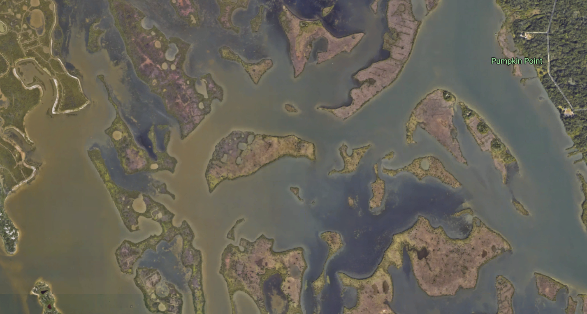

3 minutes read
In 2016, the University of Central Florida's Citizen Science GIS team led by Dr. Timothy Hawthorne launched its Open Reef Initiative to create high-resolution aerial imagery of vulnerable islands and coastal environments in Belize using relatively affordable, consumer-level drones. Recently, the Coastal Connections project team utilized the same technology to capture high-resolution drone videos and images of the Indian River Lagoon, Florida. On October 31, 2018 postdoctoral researchers, Dr. Bo Yang and Dr. Hannah Torres, deployed a DJI Phantom 4 Pro UAV/drone, to get a bird's-eye view of the winding patchwork maze of water and vegetation at River Breeze Park in Oak Hill. These images and videos can now be used to let people experience the beauty of the Indian River Lagoon from anywhere by loading the videos to DJI's Virtual Reality Goggles. In doing so, the aim is to spark people's interest in the Indian River Lagoon and help them reflect on their feeling of connectedness there. See below for a drone bird's-eye video of the Indian River Lagoon. More videos are also available in original high resolution.
In addition to providing spectacular photos and videos for their aesthetic value, drone imagery can complement satellite imagery to improve scientific analysis and resource management. Below, you can see how the drone image (bottom) is more clear and up-to-date than the satellite imagery (top). Drones have the power to obtain real-time, high-resolution images, as well as videos of the land features.
Using drones for science, we also generate Orthomosaic images for parts of a land pattern, meaning many images are digitally stitched together and geo-referencing corrected using geo-registration algorithms in Esri's Drone2Map software. The Orthomosaic imagery from River Breeze Park is pictured below, and raster file can be found in Citizen Science GIS at ArcGIS online (link). The Orthomosaic drone imagery provides relatively higher spatial resolution than the previous satellite remote sensing imagery. Besides the orthomosaic imagery, drone is also able to generate geo-referencing high-resolution products of DEM/DSM, NDVI, and 3-D cloud model.
Stay tuned to learn more about how the Citizen Science GIS team is partnering with Smithsonian, Cornell, and the University of California, Davis and using these technologies for mapping marine ecosystems along the entire west coast of the United States from Alaska to California! In addition to our blog, you can follow us on Facebook, Instagram, and Twitter.By Dr. Bo Yang and Dr. Hannah Torres.
 Figure 1. the Indian River Lagoon from Google earth imagery
Figure 2. the Indian River Lagoon from drone imagery
Figure 3. Orthographic of Oak Hill at River Breeze Park near Indian River Lagoon on ArcGIS online.
Updated: November 28, 2018